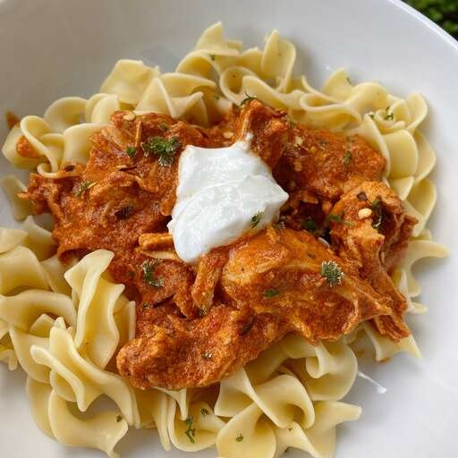

Paprikash
What is Paprikash?
This chicken paprikash can be made either in an Instant Pot or on the stovetop. No matter which method you use, it will be cooked in less than 30 minutes! Feel free to use a blend of paprika--I used 3 different types: smoked paprika, sweet paprika, and regular paprika.
Ingredients
- 1 (12 ounce) package egg noodles
- 2 tablespoons butter
- 1 tablespoon minced parsley
- 1 ½ teaspoons salt, divided
- 1 teaspoon ground black pepper, divided
- 1 tablespoon olive oil
- 3 shallots, thinly sliced
- 6 cloves garlic, coarsely chopped
- 2 cups arrabbiata pasta sauce
- ¼ cup chicken broth
- 3 tablespoons red wine vinegar
- 2 pounds boneless, skinless chicken thighs
- 1 cup plain yogurt, divided
- 3 tablespoons paprika
Steps
- Fill a large pot with lightly salted water and bring to a rapid boil. Cook egg noodles at a boil until tender yet firm to the bite, 7 to 9 minutes. Drain and toss with butter, parsley, 1/2 teaspoon salt, and 1/2 teaspoon pepper. Keep noodles warm while preparing the chicken.
- Turn on a multi-functional pressure cooker (such as Instant Pot®) and select Saute function. Add oil, shallots, and garlic; saute until fragrant, 2 to 3 minutes. Pour in pasta sauce, chicken broth, and red wine vinegar.
- Season chicken with remaining 1 teaspoon salt and 1/2 teaspoon pepper. Add chicken to the pot. Close and lock the lid. Select high pressure according to manufacturer's instructions; set timer for 12 minutes. Allow 10 to 15 minutes for pressure to build.
Recipes are taken from allrecipes website.